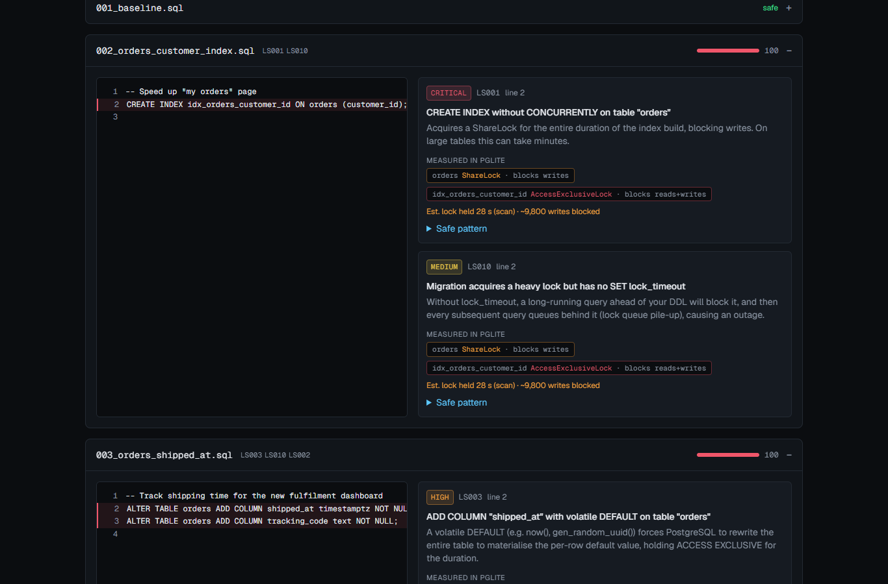
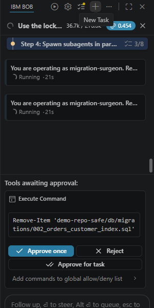
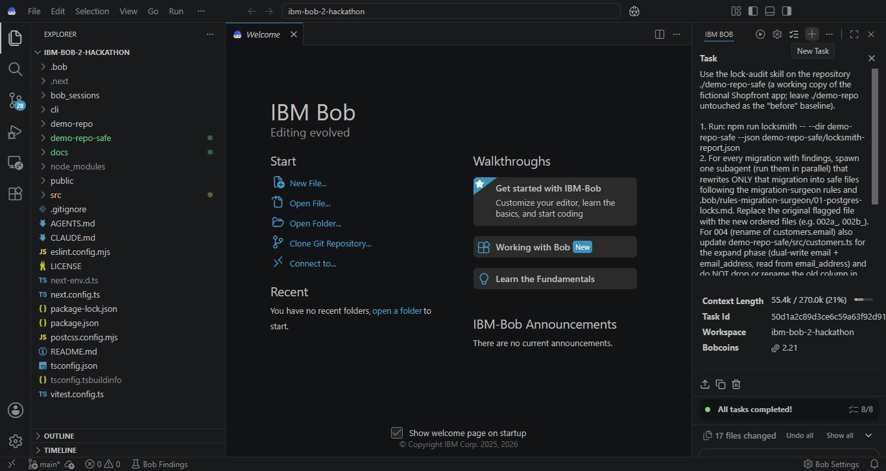

A PostgreSQL migration gate that measures real locks and uses a custom IBM Bob mode with parallel subagents to rewrite dangerous migrations into verified zero-downtime rollouts.
| Innocent-looking line | What PostgreSQL does |
|---|---|
| CREATE INDEX … ON orders (customer_id) | ShareLock for the whole build → all writes blocked |
| ALTER COLUMN total TYPE numeric(12,2) | AccessExclusiveLock + full table rewrite |
| ADD COLUMN … NOT NULL DEFAULT now() | volatile default → full table rewrite |
| RENAME COLUMN email TO email_address | instant — but every running app instance breaks |
| …no SET lock_timeout | queues behind one slow query, then blocks everything |
Reviewers need lock semantics by heart. Misses cause outages; the safe rewrite costs a senior engineer hours.
12 deterministic rules, incl. renames still referenced by app code
Replay in embedded Postgres (PGlite); read pg_locks, detect rewrites via relfilenode
Table sizes → seconds of lock, writes blocked
Custom mode + skill; 1 subagent per migration, in parallel
Same engine re-checks Bob's output; CLI blocks CI
The AI is verified, not trusted: a deterministic engine with measured locks judges; Bob does the judgement-heavy surgery.



.bob/custom_modes.yaml — role, fileRegex-restricted edits.bob/rules-migration-surgeon/ — lock reference Bob reads.bob/skills/lock-audit — run gate → 6 parallel subagents → merge → re-run gaterisk · FAIL · 14 findings (4 critical) · longest lock ≈ 4.7 min
risk · PASS · 0 findings · 6 migrations → 13 ordered safe files + dual-write app code
Verified by the same engine and lock probe. 61 automated tests. Try any migration at /analyze.
| # | Task | Bob features |
|---|---|---|
| 1 | Architecture + contracts from the spec | Agent mode · document understanding |
| 2 | Rule engine LS001–LS012 + 53 tests | Agent mode · todo list · test loop |
| 3 | PGlite lock probe + fix of a reviewed defect | parallel commands · debugging |
| 4 | Migration Surgeon mode, rules, skill | custom mode · skill |
| 5 | Rewrite the release | custom mode · 6 parallel subagents |
| 6 | Engine false positive + API security review | debugging · review |
Every task: summary screenshot in bob_sessions/, independent re-run of tests, accept/reject logged.
Next: GitHub Action · Prisma / Rails / Flyway adapters · real table sizes from pg_stat_user_tables · MySQL online-DDL rules · watsonx.ai rollout runbooks.